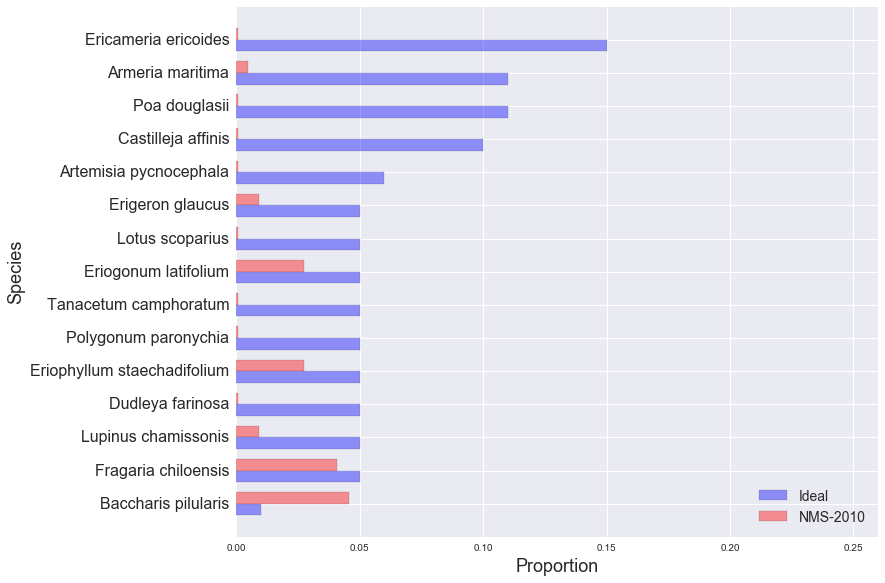

golden gate national parks conservancy: scrub mix
NMS-2010
EAPO-2011
NMS-2010
NMS-2011
NMS-2012
NUWO-2010
NUWO-2011
NUWO-2012
SUDU-2008
SUDU-2009
SUDU-2010
SUDU-2011
SUDU-2012
Ideal and Observed Scrub Mix, NMS-2010:
Other Species in NMS-2010 Sample:
| Species | Observed % |
|---|---|
| Bare ground | 17.27% |
| Avena sp. | 13.18% |
| Grass litter | 6.36% |
| Lolium sp. | 5.91% |
| Madia sativa | 4.55% |
| Bromus diandrus | 3.18% |
| Briza maxima | 2.73% |
| Cupressus macrocarpa | 2.73% |
| Gnaphalium luteo-album | 2.73% |
| Achillea millefolium | 2.27% |
| Cerastium glomeratum | 2.27% |
| Scrophularia californica | 2.27% |
| Hordeum sp. | 1.82% |
| Lupinus arboreus | 1.36% |
| Mimulus aurantiacus | 1.36% |
| Anaphalis margaritacea | 1.36% |
| Gnaphalium stramineum | 0.91% |
| Phalaris paradoxa | 0.91% |
| Rubus ursinus | 0.91% |
| Aster chilensis | 0.91% |
| Sonchus oleraceous | 0.91% |
| Anagalis arvensis | 0.45% |
| Hesperocnide tenella | 0.45% |
| Raphanus sativus | 0.45% |
| Carduus pycnocephalus | 0.45% |
| Eschscholzia californica | 0.45% |
| BRMA litter | 0.45% |
| Polycarpon tetraphyllum | 0.45% |
| Ehrharta erecta | 0.45% |
| Fumaria parviflora | 0.45% |
| BRDI litter | 0.45% |
| Elymus glaucus | 0.45% |
| Grindelia hirsutula var. hirsutula | 0.45% |
| Rumex salicifolius | 0.45% |
| Litter | 0.45% |
| Solanum sp. | 0.45% |
| Melilotus indica | 0.45% |
| Ceanothus thyrsiflorus | 0.45% |